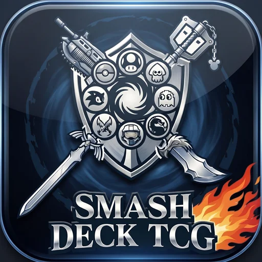
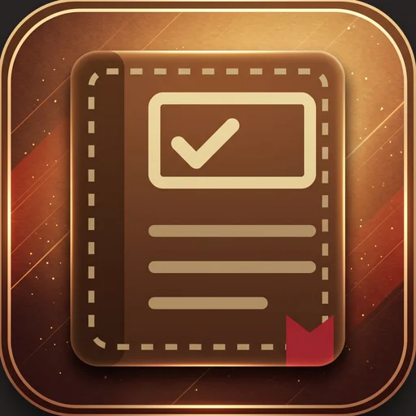
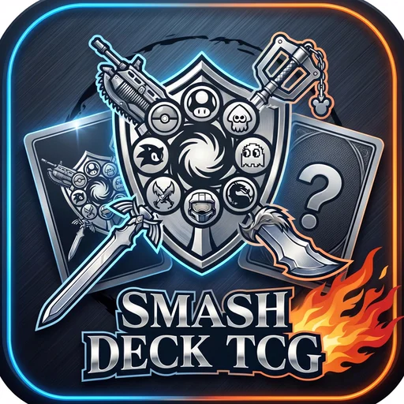

Produto: primeiro o problema.
Antes de abrir o editor, pergunto quem vai usar, qual o objetivo dessa pessoa na tela e o que acontece se ela errar. A interface é o veículo para essa experiência, não o ponto de partida.
Front-end · UX/UI · Acessibilidade
Sou o Gustavo, desenvolvedor front-end vindo do direito. Começo pelo problema, não pela tela, e escrevo código com intencionalidade, focando nos fundamentos.
Sobre
Sou formado em Direito e fiz a transição para o desenvolvimento front-end pela pós-graduação Dev Start. Da advocacia eu trouxe três hábitos: pensar em quem vai ser afetado por uma decisão, escrever de um jeito que qualquer pessoa entenda e cuidar dos detalhes.
É por isso que meus projetos são feitos com HTML, CSS e JavaScript puro: quero firmar os fundamentos antes de usar uma ferramenta que esconde eles. Hoje estou estudando React e TypeScript.
Filosofia
Antes de abrir o editor, pergunto quem vai usar, qual o objetivo dessa pessoa na tela e o que acontece se ela errar. A interface é o veículo para essa experiência, não o ponto de partida.
Uma ação principal por tela, o mais importante aparecendo primeiro, "Desfazer" no lugar de "Tem certeza?". E tudo funcionando com teclado, leitor de tela e celular.
HTML semântico, CSS organizado em variáveis e JavaScript escrito com intencionalidade. Prefiro uma solução simples e fácil de manter a uma solução esperta que ninguém consegue manter.
Projetos
Cada estudo de caso conta o problema, para quem, como foi feito e por que cada decisão foi tomada.

01 Produto autoral · SPA sem framework Smash Deck TCG Jogo de cartas autoral: game design, lore e o site oficial em JavaScript puro. Ver estudo de caso 02 App web · PWA offline PageLog App de leitura instalável que sincroniza sem conta e funciona sem internet. Ver estudo de caso
03 Ferramenta de gestão · Dados financeiros Livro-Caixa Prestação de contas de condomínio com relatório público para os moradores. Ver estudo de caso
04 Interação · Interface de jogo Jogo da Memória Minijogo com as lendas do Smash Deck, cartas em 3D e tabuleiro sem rolagem. Ver estudo de casoContato
Estou buscando minha primeira oportunidade como desenvolvedor front-end. Se o seu time valoriza quem pensa no problema antes da tela e escreve código com intencionalidade, focando nos fundamentos, eu adoraria conversar.
menacho1996@gmail.com